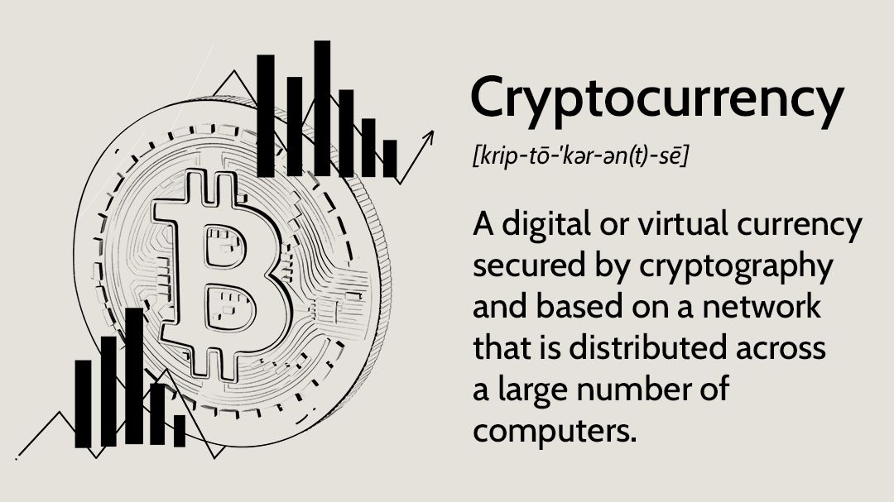

cryptocurrency introduction
Cryptocurrency, sometimes called crypto-currency or crypto, is any form of currency that exists digitally or virtually and uses cryptography to secure transactions. Cryptocurrencies don't have a central issuing or regulating authority, instead using a decentralized system to record transactions and issue new units.
concept of cryptocurrency
A cryptocurrency is an encrypted data string that denotes a unit of currency. It is monitored and organized by a peer-to-peer network called a blockchain, which also serves as a secure ledger of transactions, e.g., buying, selling, and transferring.
benefits of cryptocurrency
With cryptocurrency, the transaction cost is low to nothing at all—unlike, for example, the fee for transferring money from a digital wallet to a bank account. You can make transactions at any time of the day or night, and there are no limits on purchases and withdrawals.
Why is it called cryptocurrency?
"Crypto" refers to the various encryption algorithms and cryptographic techniques that safeguard these entries, such as elliptical curve encryption, public-private key pairs, and hashing functions. Cryptocurrencies can be mined or purchased from cryptocurrency exchanges.
History
In 1983, American cryptographer David Chaum conceived of a type of cryptographic electronic money called ecash. Later, in 1995, he implemented it through Digicash, an early form of cryptographic electronic payments. Digicash required user software in order to withdraw notes from a bank and designate specific encrypted keys before it can be sent to a recipient. This allowed the digital currency to be untraceable by a third party.
In 1996, the National Security Agency published a paper entitled How to Make a Mint: the Cryptography of Anonymous Electronic Cash, describing a cryptocurrency system. The paper was first published in an MIT mailing list and later in 1997 in The American Law Review. In the 1997 book The Sovereign Individual, the authors, William Rees-Mogg and James Dale Davidson, predict that the currency used in the information age would be using "mathematical algorithms that have no physical existence", which has led some in the cryptocurrency community to call the book's claim a "prophecy".
In January 2009, Bitcoin was created by pseudonymous developer Satoshi Nakamoto. It used SHA-256, a cryptographic hash function, in its proof-of-work scheme. In April 2011, Namecoin was created as an attempt at forming a decentralized DNS. In October 2011, Litecoin was released which used scrypt as its hash function instead of SHA-256. Peercoin, created in August 2012, used a hybrid of proof-of-work and proof-of-stake. On 6 August 2014, the UK announced its Treasury had commissioned a study of cryptocurrencies, and what role, if any, they could play in the UK economy. The study was also to report on whether regulation should be considered. Its final report was published in 2018, and it issued a consultation on cryptoassets and stablecoins in January 2021.
In June 2021, El Salvador became the first country to accept Bitcoin as legal tender, after the Legislative Assembly had voted 62–22 to pass a bill submitted by President Nayib Bukele classifying the cryptocurrency as such. In August 2021, Cuba followed with Resolution 215 to recognize and regulate cryptocurrencies such as Bitcoin. In September 2021, the government of China, the single largest market for cryptocurrency, declared all cryptocurrency transactions illegal. This completed a crackdown on cryptocurrency that had previously banned the operation of intermediaries and miners within China.
Formal definition
According to Jan Lansky, a cryptocurrency is a system that meets six conditions:
The system does not require a central authority; its state is maintained through distributed consensus.
The system keeps an overview of cryptocurrency units and their ownership.
The system defines whether new cryptocurrency units can be created. If new cryptocurrency units can be created, the system defines the circumstances of their origin and how to determine the ownership of these new units.
Ownership of cryptocurrency units can be proved exclusively cryptographically.
The system allows transactions to be performed in which ownership of the cryptographic units is changed. A transaction statement can only be issued by an entity proving the current ownership of these units.
If two different instructions for changing the ownership of the same cryptographic units are simultaneously entered, the system performs at most one of them.
In March 2018, the word cryptocurrency was added to the Merriam-Webster Dictionary.
Architecture
This section duplicates the scope of other articles, specifically Blockchain. Please discuss this issue on the talk page and edit it to conform with Wikipedia's Manual of Style by replacing the section with a link and a summary of the repeated material or by spinning off the repeated text into an article in its own right. (August 2022)Cryptocurrency is produced by an entire cryptocurrency system collectively, at a rate which is defined when the system is created and which is publicly stated. In centralized banking and economic systems such as the US Federal Reserve System, corporate boards or governments control the supply of currency.[citation needed] In the case of cryptocurrency, companies or governments cannot produce new units, and have not so far provided backing for other firms, banks or corporate entities which hold asset value measured in it. The underlying technical system upon which cryptocurrencies are based was created by Satoshi Nakamoto.
Within a proof-of-work system such as Bitcoin, the safety, integrity and balance of ledgers is maintained by a community of mutually distrustful parties referred to as miners. Miners use their computers to help validate and timestamp transactions, adding them to the ledger in accordance with a particular timestamping scheme. In a proof-of-stake blockchain, transactions are validated by holders of the associated cryptocurrency, sometimes grouped together in stake pools.
Most cryptocurrencies are designed to gradually decrease the production of that currency, placing a cap on the total amount of that currency that will ever be in circulation. Compared with ordinary currencies held by financial institutions or kept as cash on hand, cryptocurrencies can be more difficult for seizure by law enforcement.
Blockchain
The validity of each cryptocurrency's coins is provided by a blockchain. A blockchain is a continuously growing list of records, called blocks, which are linked and secured using cryptography. Each block typically contains a hash pointer as a link to a previous block, a timestamp and transaction data. By design, blockchains are inherently resistant to modification of the data. It is "an open, distributed ledger that can record transactions between two parties efficiently and in a verifiable and permanent way". For use as a distributed ledger, a blockchain is typically managed by a peer-to-peer network collectively adhering to a protocol for validating new blocks. Once recorded, the data in any given block cannot be altered retroactively without the alteration of all subsequent blocks, which requires collusion of the network majority.
Blockchains are secure by design and are an example of a distributed computing system with high Byzantine fault tolerance. Decentralized consensus has therefore been achieved with a blockchain

Nodes
A node is a computer that connects to a cryptocurrency network. The node supports the cryptocurrency's network through either; relaying transactions, validation or hosting a copy of the blockchain. In terms of relaying transactions each network computer (node) has a copy of the blockchain of the cryptocurrency it supports. When a transaction is made the node creating the transaction broadcasts details of the transaction using encryption to other nodes throughout the node network so that the transaction (and every other transaction) is known.
Node owners are either volunteers, those hosted by the organization or body responsible for developing the cryptocurrency blockchain network technology, or those who are enticed to host a node to receive rewards from hosting the node network.
Timestamping
Cryptocurrencies use various timestamping schemes to "prove" the validity of transactions added to the blockchain ledger without the need for a trusted third party.
The first timestamping scheme invented was the proof-of-work scheme. The most widely used proof-of-work schemes are based on SHA-256 and scrypt.
Some other hashing algorithms that are used for proof-of-work include CryptoNight, Blake, SHA-3, and X11.
Another method is called the proof-of-stake scheme. Proof-of-stake is a method of securing a cryptocurrency network and achieving distributed consensus through requesting users to show ownership of a certain amount of currency. It is different from proof-of-work systems that run difficult hashing algorithms to validate electronic transactions. The scheme is largely dependent on the coin, and there's currently no standard form of it. Some cryptocurrencies use a combined proof-of-work and proof-of-stake scheme.
Mining
On a blockchain, mining is the validation of transactions. For this effort, successful miners obtain new cryptocurrency as a reward. The reward decreases transaction fees by creating a complementary incentive to contribute to the processing power of the network. The rate of generating hashes, which validate any transaction, has been increased by the use of specialized machines such as FPGAs and ASICs running complex hashing algorithms like SHA-256 and scrypt.This arms race for cheaper-yet-efficient machines has existed since Bitcoin was introduced in 2009.
With more people venturing into the world of virtual currency, generating hashes for validation has become more complex over time, forcing miners to invest increasingly large sums of money to improve computing performance. Consequently, the reward for finding a hash has diminished and often does not justify the investment in equipment and cooling facilities (to mitigate the heat the equipment produces), and the electricity required to run them.Popular regions for mining include those with inexpensive electricity, a cold climate, and jurisdictions with clear and conducive regulations. By July 2019, Bitcoin's electricity consumption was estimated to be approximately 7 gigawatts, around 0.2% of the global total, or equivalent to the energy consumed nationally by Switzerland.
Some miners pool resources, sharing their processing power over a network to split the reward equally, according to the amount of work they contributed to the probability of finding a block. A "share" is awarded to members of the mining pool who present a valid partial proof-of-work.
GPU price rise
An increase in cryptocurrency mining increased the demand for graphics cards (GPU) in 2017. The computing power of GPUs makes them well-suited to generating hashes. Popular favorites of cryptocurrency miners such as Nvidia's GTX 1060 and GTX 1070 graphics cards, as well as AMD's RX 570 and RX 580 GPUs, doubled or tripled in price – or were out of stock. A GTX 1070 Ti which was released at a price of $450 sold for as much as $1,100. Another popular card, the GTX 1060 (6 GB model) was released at an MSRP of $250, and sold for almost $500. RX 570 and RX 580 cards from AMD were out of stock for almost a year. Miners regularly buy up the entire stock of new GPU's as soon as they are available.
As of February 2018, the Chinese Government has halted trading of virtual currency, banned initial coin offerings and shut down mining. Many Chinese miners have since relocated to Canada and Texas. One company is operating data centers for mining operations at Canadian oil and gas field sites, due to low gas prices. In June 2018, Hydro Quebec proposed to the provincial government to allocate 500 megawatts of power to crypto companies for mining. According to a February 2018 report from Fortune, Iceland has become a haven for cryptocurrency miners in part because of its cheap electricity.
Nvidia has asked retailers to do what they can when it comes to selling GPUs to gamers instead of miners. Boris Böhles, PR manager for Nvidia in the German region, said: "Gamers come first for Nvidia."
Wallets
A cryptocurrency wallet is a means of storing the public and private "keys" (address) or seed which can be used to receive or spend the cryptocurrency. With the private key, it is possible to write in the public ledger, effectively spending the associated cryptocurrency. With the public key, it is possible for others to send currency to the wallet.
There exist multiple methods of storing keys or seed in a wallet. These methods range from using paper wallets (which are public, private or seed keys written on paper), to using hardware wallets (which are hardware to store your wallet information), to a digital wallet (which is a computer with a software hosting your wallet information), to hosting your wallet using an exchange where cryptocurrency is traded, or by storing your wallet information on a digital medium such as plaintext.
Anonymity
Bitcoin is pseudonymous, rather than anonymous; the cryptocurrency in a wallet is not tied to a person, but rather to one or more specific keys (or "addresses"). Thereby, Bitcoin owners are not immediately identifiable, but all transactions are publicly available in the blockchain. Still, cryptocurrency exchanges are often required by law to collect the personal information of their users. Some cryptocurrencies, such as Monero, Zerocoin, Zerocash, and CryptoNote, implement additional measures to increase privacy, such as by using zero-knowledge proofs.